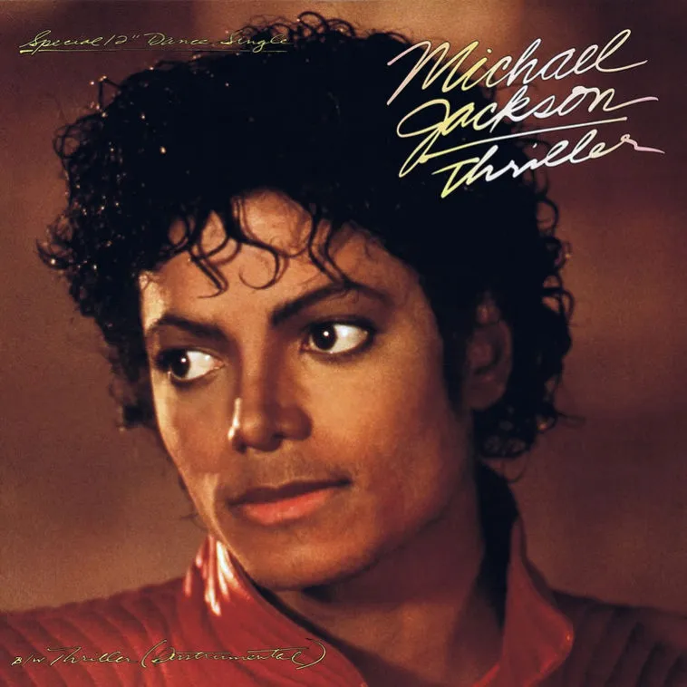

Michael Jackson, often referred to as the "King of Pop," was a legendary musician, dancer, and entertainer whose impact on the world of music and popular culture remains unparalleled. Born on August 29, 1958, in Gary, Indiana, he rose to fame at an early age as a member of the Jackson 5 alongside his siblings. From there, he embarked on a solo career that not only set records but also redefined the very essence of pop music.
The year 1982 witnessed the release of "Thriller," an album that forever altered the landscape of the music industry. "Thriller" remains the best-selling album of all time, and its title track, along with songs like "Billie Jean" and "Beat It," became timeless classics. The album's accompanying music video was revolutionary and showcased Michael's extraordinary dancing talent.
One of Michael Jackson's most notable contributions was his revolutionary approach to music videos. "Thriller" and "Billie Jean" in particular set new standards for storytelling and choreography in music videos, and their impact can still be seen in the artistry of today's music videos.
Michael was also a trailblazing dancer, popularizing iconic moves like the moonwalk. His unique fashion sense, including the single white glove, fedora, and military-style jackets, became synonymous with his image.
Michael Jackson's enduring legacy is not just in the countless records he broke, but in the way he touched the hearts and souls of people around the world. His music and artistry transcended boundaries, and his influence on subsequent generations of artists is immeasurable. The world of music lost a true icon when Michael Jackson passed away on June 25, 2009, but his memory and contributions to the world of entertainment live on in the hearts of his fans and in the music that continues to inspire and move us.
In a world filled with hate, we must still dare to hope. In a world filled with anger, we must still dare to comfort. In a world filled with despair, we must still dare to dream. And in a world filled with distrust, we must still dare to believe.- Michael Jackson
Let us dream of tomorrow where we can truly love from the soul, and know love as the ultimate truth at the heart of all creation.- Michael Jackson